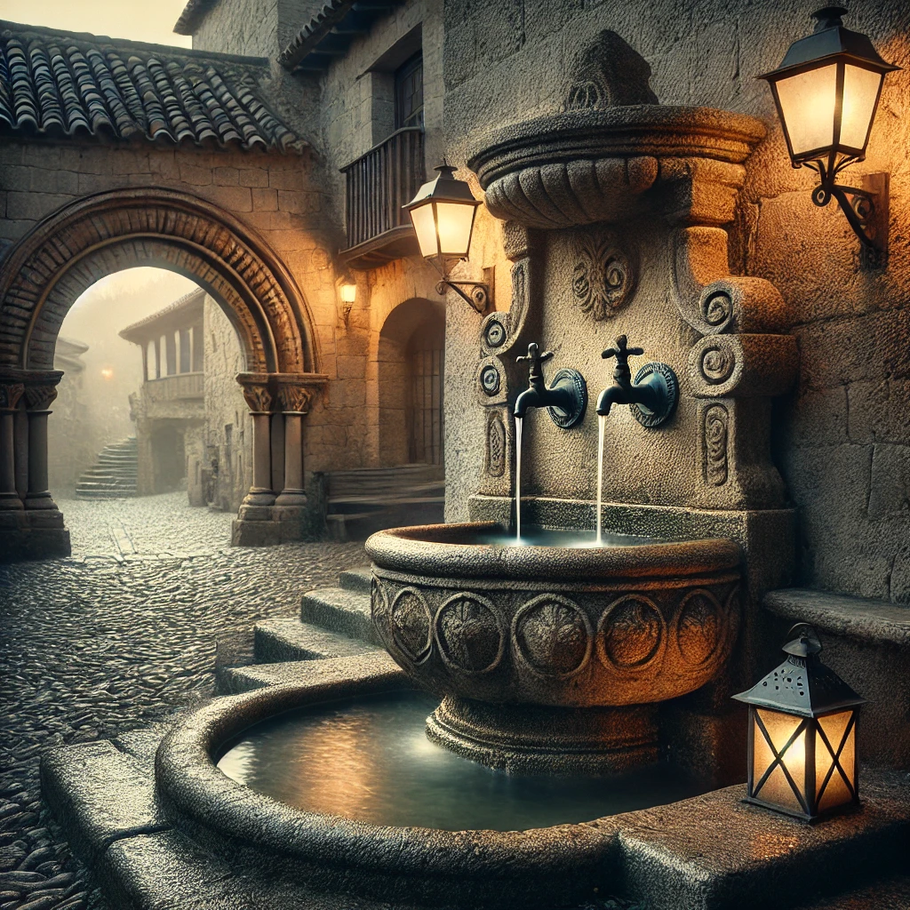

Acércate a la fuente y al portalón para continuar.
O escribe el nombre:
Portalón: Lugar renacentista de reunión y comercio. Aún conserva inscripciones originales. Más info
Fuente: De dos caños con decoración geométrica, construida en el siglo XVI.
Conecta los Canales
Rota las piezas para conectar el flujo de agua.
Reto del Caudal
Ajusta el caudal de la fuente para alcanzar el nivel correcto.

Nivel de Caudal: 50%
Fragmento del Mensaje:[Mensaje]
QR Extra: FUENTE-EXTRA
Dato Curioso: Durante siglos, este lugar ha sido testigo de reuniones y leyendas; se dice que el agua de la fuente tiene propiedades curativas y susurra historias antiguas.